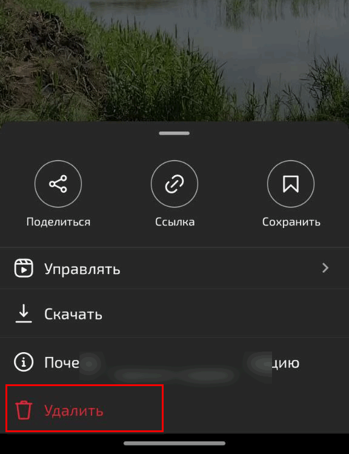
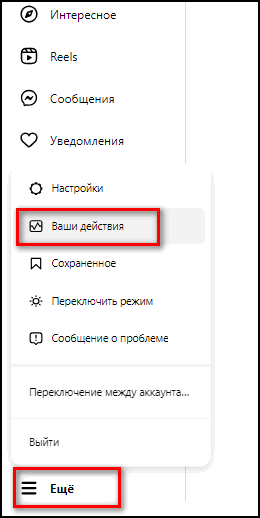
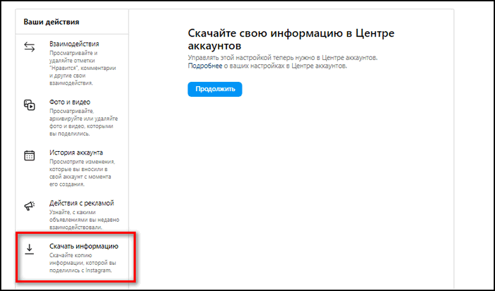
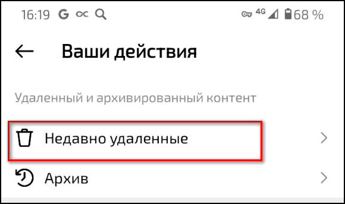
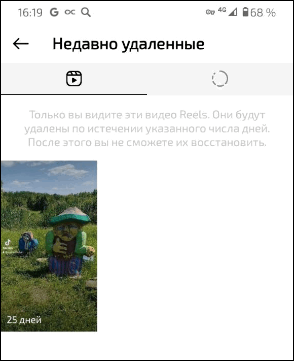
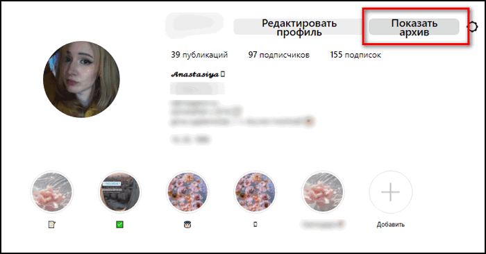

Как удалить и вернуть видео Рилс в Инстаграме

Удалить видео Reels в Инстаграме* можно двумя способами: убрать навсегда или перенести в Архив. С помощью второго варианта можно временно скрыть публикацию и потом восстановить на ту же дату.
Удалить видео Рилс в Инстаграме* с телефона
С помощью мобильной версии можно убрать публикацию навсегда и в Архив. Если удалить публикацию, можно восстановить только через раздел: «Мои действия». Оно было добавлено в одном из последних обновлений и указывает на то, что автор может восстановить ранее утерянный контент: удаленный случайно или намеренно.
Удалить насовсем:
- Зайти в Инстаграм* — выбрать видеозапись из раздела Рилс.

- Нажать три точки сверху: «Удалить» — нажать «Ок».

Если же автор желает временно скрыть запись, то нужно выбрать опцию: «Архивировать».
С компьютерной версии
Удалить клип с компьютерной версии также просто, как в мобильной: открыть сайт, авторизоваться и перейти к перечню своих видео. Автор переходит к клипу и нажимает сверху по трем точкам: "Удалить", далее будет подтверждение и возможность убрать Рилс из Ленты временно. С ПК версии, чтобы вернуть запись, придется все равно подключать смартфон или эмулятор. Даже при удалении контента не появится оповещение о том, что запись можно восстановить.
С компьютера можно перейти в Архив и вернуть публикации, которые были перемещены туда: с удалением или восстановлением.
Нестандартный вариантом возвращения записи будет запрос информации. Эта функция предполагает, что будут собраны все данные по пользователю, включая комментарии и отправленные сообщения. Удаленные Reels – это также часть данных, которые до истечения 30 дней, хранятся в «корзине».
Запросить данные, воспользовавшись компьютерной версией и не скачивая эмулятор:
- Зайти в Инстаграм* – на сбоку по трем линиям.
- Ваши действия – в конце появится: «Скачать информацию».

- Указать адрес электронной почты, куда нужно отправить.
- Подтвердить действие и подождать, пока придет сообщение со ссылкой.

- Перейти по полученному адресу – разрешить скачивание.
Полученный архив нужно открыть с помощью WinRar и перейти к папкам. Среди них будет та, где содержится весь недавно удаленный контент. Получив видео, можно восстановить Reels в Ленту, если заново разместить запись.
Вернуть видео Reels в профиль Instagram*
После удаления есть 30 дней, чтобы вернуть публикацию на её прежнее место. Социальная сеть хранит все убранные записи только в рамках этого срока, после чего — восстановить не получится.
Как вернуть публикацию:
- Зайти в свой профиль — нажать сверху по трем полоскам.
- Ваши действия — Недавно удаленный контент.

- Найти запись — нажать по двум точкам снизу: «Восстановить».

Даже удалив Рилс в Инстаграм*, система попросит подтверждения о том, что вернуть его в Ленту. Автор может отказаться, если не уверен в том, что нужно размещать.
Если публикация в Архиве
В отличие от удаления, у архивации есть преимущество: вернуть видео Reels в сетку профиля можно в любой момент. Нет ограничений по времени: хранятся записи в любом количестве и на неопределенный срок. Архив доступен с мобильной и компьютерной версии без ограничений. Как перенести материалы из Архива на мобильной:
- Зайти в Инстаграм* – нажать три полоски сверху.
- Раздел «Архив» - выбрать Рилс, который нужно восстановить.

- Нажать по посту – нажать сверху три точки: «Вернуть в Ленту».
Отличие в компьютерной версии в том, что раздел с «Архивом» находится на главной, рядом с аватаркой. Поэтому, если архивировать Рилс в Инстаграме* с телефона или компьютера – такие публикации просто вернуть.
Восстановить из памяти смартфона
Если автор не архивировал Reels в Инстаграме* и запись была удалена более 30 дней назад, то можно попытаться найти видео в памяти смартфона. После добавления в Ленту социальной сети, запись обычно сохраняется в Галерее, но без музыкальной дорожки. Такое происходит, если звук был наложен из композиций Инстаграма*. Отыскать Reels, даже удалив черновик в Инстаграме*, получится если материалы не были перенесены в Корзину на смартфоне:
- Зайти в Галерею – перейти в папку «Instagram*»
- Найти ранее размещенное видео – перейти в социальную сеть.
- Открыть раздел с добавлением новой публикации.
Так как музыкальная композиция не сохраняется, то дорожку придется добавлять загово. Для этого есть встроенный редактор и базовые инструменты: изменить продолжительность, выбрать отрезок откуда начнется звук.
Видео было удалено навсегда в Инстаграме*
Восстановить Reels, если удалил полностью практически невозможно. Это касается даже удаления из Галереи устройства. Где можно поискать удаленные материалы:
- в Черновиках. Если видео состояло из нескольких отрезков и автор сохранял его в проектах;
- в облачном хранилище. При постоянной синхронизации материалы дополнительно хранятся на сервере, откуда их можно скачать;
- переписки и чаты. Если автор отправлял клип в оригинале через Телеграм, Вконтакте;
- другие социальные сети. При репостах по разным платформам. видеозапись можно вернуть через сохранение снова на смартфон.
В других случаях, восстановить удаленный Рилс в Инстаграме* не получится. И единственный вариант – записать видео заново.
Если клип заблокировали
После блокировки записи у пользователя появится уведомление, в котором есть вариант с обжалованием. Автор может подать претензию о том, что не согласен с решением администрации и запись вернется в Ленту. Но происходит это после того, как жалобу рассмотрят и проверят на наличие ошибок модерации. В остальных случаях лучше поискать запись на смартфоне и исправить проблемы. Например, автор воспользовался заблокированной музыкой или видеоряд противоречит правилам сообщества. Удалив такие элементы и изменив музыкальное сопровождение, запись можно загружать заново, но регулярно отслеживать статистику и нет ли иных претензий.